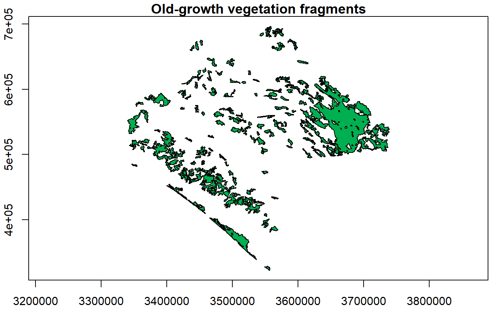
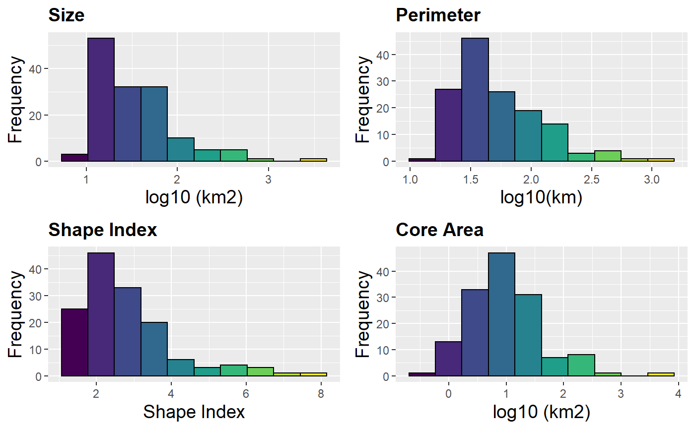
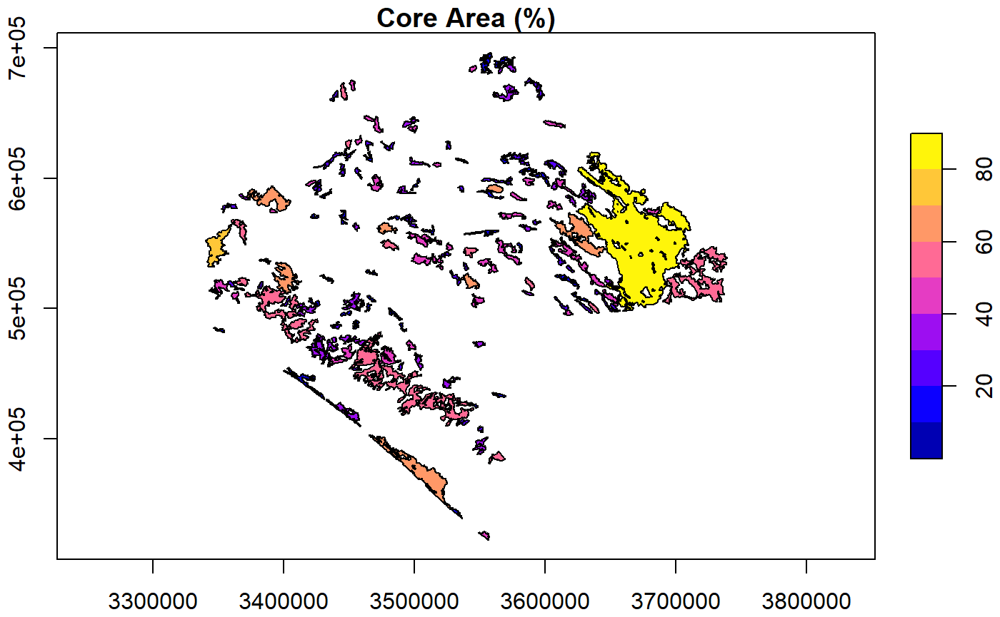
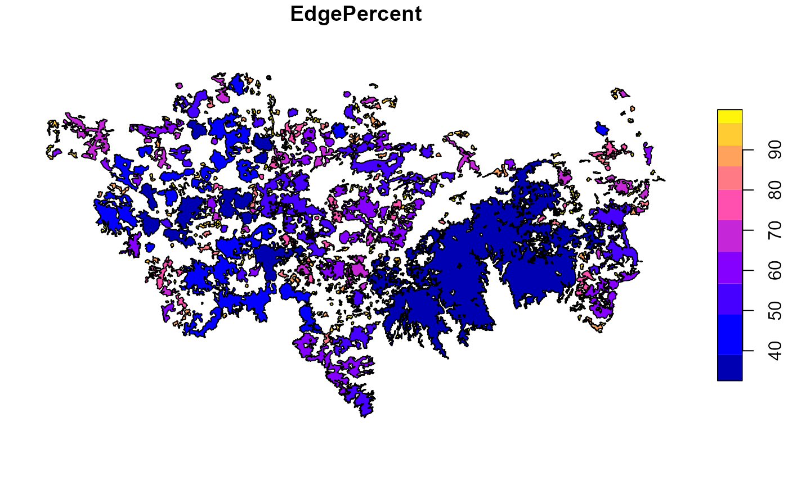
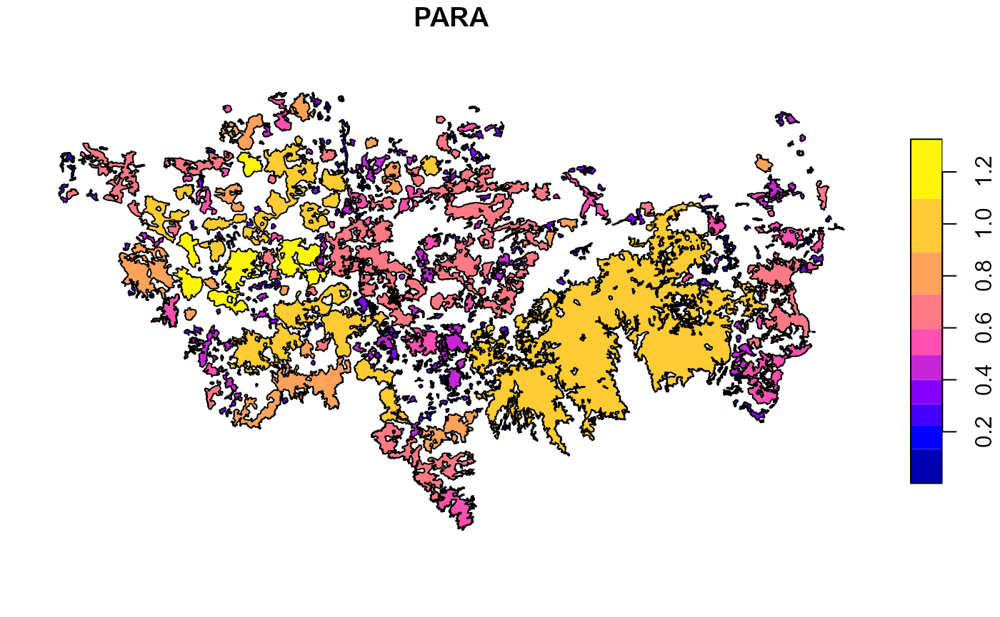
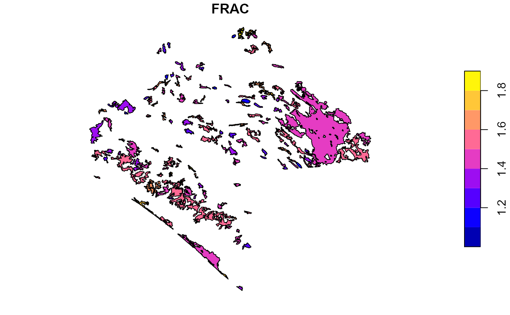
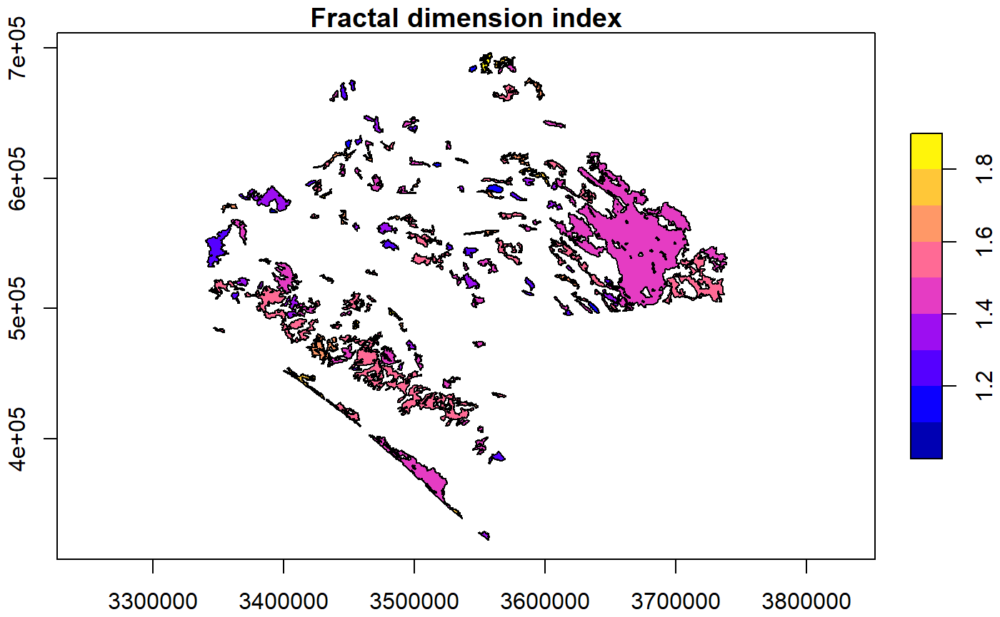
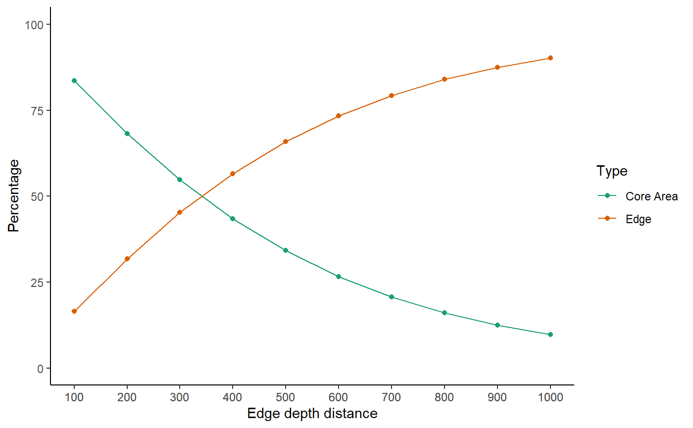

Fragmentation statistics
Source:vignettes/Fragmentation_statistics.Rmd
Fragmentation_statistics.RmdWe explored the MK_Fragmentation() to estimate fragmentation statistics at the landscape and patch level.
library(Makurhini)
## Registered S3 method overwritten by 'xts':
## method from
## as.zoo.xts zoo## Registered S3 method overwritten by 'geojsonlint':
## method from
## print.location dplyrlibrary(sf)
## Linking to GEOS 3.6.1, GDAL 2.2.3, PROJ 4.9.3We loaded the “vegetation_patches” database that contains 142 patches of old-growth vegetation from the state of Chiapas, Mexico. The shapefile has 143 rows (patches), the first column corresponds to the id of the patch.
## [1] 142
To define the edge of the patches we will use a distance of 500 m from the limit of the patches (Haddad et al. 2015).

#help("FragmentationST") Fragmentation_test <- MK_Fragmentation(patches = vegetation_patches, edge_distance = 500, plot = TRUE)

The results are presented as a list, the first result is called “Summary landscape metrics (Viewer Panel)” and it has fragmentation statistics at landscape level.
names(Fragmentation_test)
## [1] "Summary landscape metrics (Viewer Panel)"
## [2] "Patch statistics shapefile"Fragmentation_test$`Summary landscape metrics (Viewer Panel)`
| Metric | Value |
|---|---|
| Patch area (km2) | 12792.201 |
| Number of patches | 142.000 |
| Size (mean) | 90.086 |
| Patches < minimum patch area | 126.000 |
| Patches < minimum patch area (%) | 30.802 |
| Total edge | 12297.533 |
| Edge density | 0.961 |
| Total Core Area (km2) | 7622.384 |
| Cority | 1.000 |
| Shape Index (mean) | 2.792 |
| FRAC (mean) | 1.468 |
| MESH (km2) | 1543.147 |
The second output “Patch statistics shapefile” is a shapefile with patch level fragmentation statistics.
Fragmentation_test$`Patch statistics shapefile`
## Simple feature collection with 142 features and 9 fields
## geometry type: POLYGON
## dimension: XY
## bbox: xmin: 3340120 ymin: 322869.6 xmax: 3739484 ymax: 696540.5
## epsg (SRID): NA
## proj4string: +proj=lcc +lat_1=17.5 +lat_2=29.5 +lat_0=12 +lon_0=-102 +x_0=2500000 +y_0=0 +datum=WGS84 +units=m +no_defs
## First 10 features:
## id Area CA CAPercent Perimeter EdgePercent PARA ShapeIndex
## 1 1 4195.569 3541.381 84.408 1412.046 15.592 2.971 6.150
## 2 2 60.223 11.941 19.828 167.982 80.172 0.359 6.106
## 3 3 48.866 6.210 12.708 127.049 87.292 0.385 5.127
## 4 4 15.188 7.421 48.861 18.536 51.139 0.819 1.342
## 5 5 33.272 13.088 39.336 55.038 60.664 0.605 2.692
## 6 6 53.134 11.356 21.372 111.123 78.628 0.478 4.300
## 7 7 83.842 31.887 38.032 121.275 61.968 0.691 3.736
## 8 8 17.387 4.519 25.991 33.798 74.009 0.514 2.287
## 9 9 18.037 7.569 41.964 25.755 58.036 0.700 1.711
## 10 10 36.336 19.358 53.275 36.972 46.725 0.983 1.730
## FRAC geometry
## 1 1.407 POLYGON ((3676911 589967.3,...
## 2 1.824 POLYGON ((3558044 696202.5,...
## 3 1.778 POLYGON ((3569169 687776.4,...
## 4 1.127 POLYGON ((3547317 685713.2,...
## 5 1.496 POLYGON ((3567471 684357.4,...
## 6 1.674 POLYGON ((3590569 672451.7,...
## 7 1.541 POLYGON ((3570789 670959.4,...
## 8 1.495 POLYGON ((3440118 666273.2,...
## 9 1.288 POLYGON ((3451637 671232.4,...
## 10 1.238 POLYGON ((3444396 671675.7,...#Para guardar #write_sf(Fragmentacion$`Patch statistics shapefile`, ".../folder/fragmentacion.shp")
We can visualize the static at the patch level, for example:
- Core area (%):
plot(Fragmentation_test$`Patch statistics shapefile`["CAPercent"], main="Core Area (%)", axes = TRUE, key.pos = 4)

- Edge (%)
plot(Fragmentation_test$`Patch statistics shapefile`["EdgePercent"], main="Edge (%)", axes = TRUE, key.pos = 4)

- Perimeter-area ratio
plot(Fragmentation_test$`Patch statistics shapefile`["PARA"], main="Perimeter-area ratio", axes = TRUE, key.pos = 4)

- Shape Index
plot(Fragmentation_test$`Patch statistics shapefile`["ShapeIndex"], main="Shape index", axes = TRUE, key.pos = 4)

- Fractal Dimension Index
plot(Fragmentation_test$`Patch statistics shapefile`["FRAC"], main="Fractal dimension index", axes = TRUE, key.pos = 4)

We can make a loop where we explore different edge depths. And we can plot the average of the patch core area percentage and average of the edge percentage (% core area +% edge = 100%).
Fragmentation_test.2 <- purrr::map_dfr(seq(100, 1000, 100), function(x){ x.1 <- MK_Fragmentation(patches = vegetation_patches, edge_distance = x, plot = FALSE)[[2]] CA <- mean(x.1$CAPercent) Edge <- mean(x.1$EdgePercent) x.2 <- rbind(data.frame('Edge distance' = x, Type = "Core Area", Percentage = CA), data.frame('Edge distance' = x, Type = "Edge", Percentage = Edge)) return(x.2) }) head(Fragmentation_test.2)
## Edge.distance Type Percentage
## 1 100 Core Area 83.50517
## 2 100 Edge 16.49483
## 3 200 Core Area 68.18519
## 4 200 Edge 31.81481
## 5 300 Core Area 54.77213
## 6 300 Edge 45.22787library(ggplot2) ggplot(Fragmentation_test.2, aes(x = Edge.distance, y = Percentage, group = Type)) + geom_line(aes(color = Type))+ geom_point(aes(color = Type))+ ylim(0,100)+ scale_x_continuous("Edge depth distance", labels = as.character(Fragmentation_test.2$Edge.distance), breaks = Fragmentation_test.2$Edge.distance)+ scale_color_brewer(palette="Dark2")+ theme_classic()

The average core area percentage (absence of edge effect) for all patches decreases by more than 70% when considering an edge effect with a penetration of 1 km.
| Edge depth distance (m) | CoreArea (%) |
|---|---|
| 100 | 83.5% |
| 500 | 34.14% |
| 1000 | 9.78% |
Reference:
INEGI. (2013). Conjunto de datos vectoriales de uso del suelo y vegetación, serie V (capa unión), escala 1:250,000. Instituto Nacional de Estadística y Geografía, Aguascalientes.
McGarigal, K., S. A. Cushman, M. C. Neel, and E. Ene. 2002. FRAGSTATS: Spatial Pattern Analysis Program for Categorical Maps. Computer software program produced by the authors at the University of Massachusetts, Amherst. Available at the following web site: www.umass.edu/landeco/research/fragstats/fragstats.html.
Haddad et al. (2015). Science Advances 1(2):e1500052. DOI: 10.1126/sciadv.1500052.